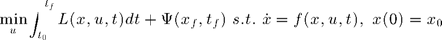
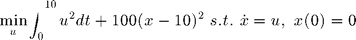
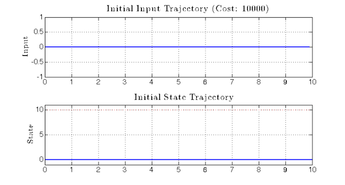
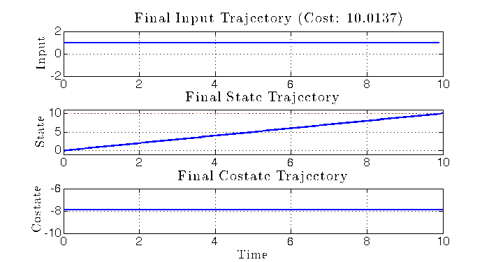
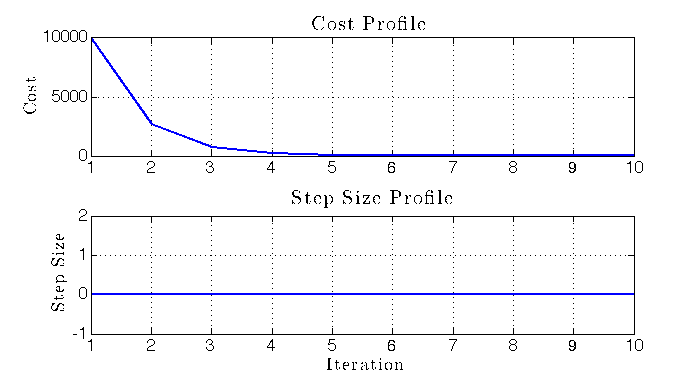
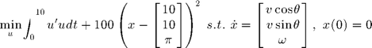
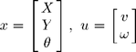

Bolza Examples
The bolzaExamples.m script is a set of examples illustrating how to use the optimal.bolza function. The Bolza problem is defined as

NECESSARY FILES AND/OR PACKAGES:
+optimal, bolza.m, simStateForward.m
AUTHOR: Rowland O'Flaherty
CREATION DATE: 02-MAY-2014
MODIFIED DATE: 03-MAY-2014
Contents
Import
Import the optimal package.
import optimal.* if 1
Single Integrator Example
In this example the optimal.bolza function is used to solve the following problem:

Single Integrator - Initialize
% Time - parameters ts = .1; % (1 x 1) Time step size t0 = 0; % (1 x 1) Initial time tf = 10; % (1 x 1) Final time % Time - variables t = t0:ts:tf; % (1 x tn) Time vector record for all time tn = length(t); % (1 x 1) Number of time samples % State - parameters x0 = 0; % (n x 1) Initial state xBar = 10; % (n x 1) Desired state % Input - parameters m = 1; % (1 x 1) Dimension of the input % Input - variables uI = zeros(m,tn-1); % (m x tn-1) Initial input trajectory % Dynamics f = @(x_,u_,t_) u_; % (n x tn) State dynamics (i.e. xDot) dfdx = @(x_,u_,t_) zeros(size(x_,1),size(x_,1),size(t_,2)); % (n x n x tn) State dynamics partial to state dfdu = @(x_,u_,t_) ones(size(x_,1),size(u_,1),size(t_,2)); % (n x m x tn) State dynamics partial to input % Cost rho = 100; % (1 x 1) Final cost weight L = @(x_,u_,t_) u_.^2; % (1 x tn) Instantaneous cost dLdx = @(x_,u_,t_) zeros(1,size(x_,1),size(t_,2)); % (1 x n x tn) Instantaneous cost partial to state dLdu = @(x_,u_,t_) 2*permute(u_,[3,1,2]); % (1 x m x tn) Instantaneous cost partial to input Psi = @(xf_,tf_) rho*(xf_ - xBar)'*(xf_ - xBar); % (1 x 1) Final cost dPsidx = @(xf_,tf_) 2*rho*(xf_ - xBar)'; % (1 x n) Final cost partial to final state % Armijo parameters alpha = 0.25; beta = 0.75; % Stopping condition stop = @(x_,u_,t_,k_) k_ >= 10;
Single Integrator - Solve
[x,u,lambda,J,JTape,gammaTape] = bolza(t,x0,uI,f,dfdx,dfdu,L,dLdx,dLdu,Psi,dPsidx,'armijoParams',[alpha beta],'stoppingCondition',stop); % Initial and final cost xI = optimal.simStateForward(f,x0,uI,t); JI = J(xI,uI,t); JF = J(x,u,t);
Single Integrator - Display Results
fprintf('Initial cost: %.3f\n',JI); fprintf('Final cost: %.3f\n',JF); fprintf('Final state: %.3f\n',x(end)); % Plot figure(1) set(1,'Position',[0 0 800 430]) subplot(2,1,1) plot(t(1:end-1),uI) title(['Initial Input Trajectory (Cost: ' num2str(JI) ')']) ylabel('Input') grid on subplot(2,1,2) plot(t,xI) hold on plot(t,repmat(xBar,size(t)),'r.') hold off yMinMax = ylim(); ylim([yMinMax(1)-1 yMinMax(2)+1]) title('Initial State Trajectory') ylabel('State') grid on figure(2) set(2,'Position',[100 100 800 700]) subplot(3,1,1) plot(t(1:end-1),u) title(['Final Input Trajectory (Cost: ' num2str(JF) ')']) ylabel('Input') grid on subplot(3,1,2) plot(t,x) hold on plot(t,repmat(xBar,size(t)),'r.') hold off yMinMax = ylim(); ylim([yMinMax(1)-1 yMinMax(2)+1]) title('Final State Trajectory') ylabel('State') grid on subplot(3,1,3) plot(t,lambda) title('Final Costate Trajectory') xlabel('Time') ylabel('Costate') grid on figure(3) set(3,'Position',[200 200 800 700]) subplot(2,1,1) plot(JTape) xlim([1 numel(gammaTape)]) title('Cost Profile') ylabel('Cost') grid on subplot(2,1,2) plot(gammaTape) xlim([1 numel(gammaTape)]) title('Step Size Profile') xlabel('Iteration') ylabel('Step Size') grid on try %#ok<TRYNC> figBoldify end
Initial cost: 10000.000 Final cost: 10.014 Final state: 9.975  
end if 0
Unicycle Example
In this example the optimal.bolza function is used to solve the following problem:

where

Unicycle - Initialize
% Time - parameters ts = .1; % (1 x 1) Time step size t0 = 0; % (1 x 1) Initial time tf = 10; % (1 x 1) Final time % Time - variables t = t0:ts:tf; % (1 x tn) Time vector record for all time tn = length(t); % (1 x 1) Number of time samples % State - parameters x0 = [0,0,0]'; % (n x 1) Initial state xBar = [10,0,0]'; % (n x 1) Desired state % Input - parameters m = 2; % (1 x 1) Dimension of the input % Input - variables uI = zeros(m,tn-1); % (m x tn-1) Initial input trajectory % Dynamics f = @(x_,u_,t_) [... u_(1,:) .* cos(x_(3,:));... u_(1,:) .* sin(x_(3,:));... u_(2,:)]; % (n x tn) State dynamics (i.e. xDot) dfdx = @(x_,u_,t_) cat(2,... zeros(3,2,size(t_,2)),... permute([-u_(1,:).*sin(x_(3,:));u_(1,:).*cos(x_(3,:));zeros(1,size(t_,2))],[1 3 2]) ); % (n x n x tn) State dynamics partial to state dfdu = @(x_,u_,t_) cat(2,... permute([cos(x_(3,:));sin(x_(3,:));zeros(1,size(t_,2))],[1 3 2]),... permute([zeros(1,size(t_,2));zeros(1,size(t_,2));ones(1,size(t_,2))],[1 3 2])); % (n x m x tn) State dynamics partial to input % Cost rho = 100; % (1 x 1) Final cost weight L = @(x_,u_,t_) sum(u_.*u_,1); % (1 x tn) Instantaneous cost dLdx = @(x_,u_,t_) zeros(1,size(x_,1),size(t_,2)); % (1 x n x tn) Instantaneous cost partial to state dLdu = @(x_,u_,t_) 2*permute(u_,[3,1,2]); % (1 x m x tn) Instantaneous cost partial to input Psi = @(xf_,tf_) rho*(xf_(1:2) - xBar(1:2))'*(xf_(1:2) - xBar(1:2)); % (1 x 1) Final cost dPsidx = @(xf_,tf_) 2*rho*[(xf_(1:2) - xBar(1:2))' 0]; % (1 x n) Final cost partial to final state % Armijo parameters alpha = 0.25; beta = 0.75; % Stopping condition stop = @(x_,u_,t_,k_) k_ >= 10;
Single Integrator - Solve
[x,u,lambda,J,JTape,gammaTape] = bolza(t,x0,uI,f,dfdx,dfdu,L,dLdx,dLdu,Psi,dPsidx,'armijoParams',[alpha beta],'stoppingCondition',stop); % Initial and final cost xI = optimal.simStateForward(f,x0,uI,t); JI = J(xI,uI,t); JF = J(x,u,t);
Single Integrator - Display Results
fprintf('Initial cost: %.3f\n',JI); fprintf('Final cost: %.3f\n',JF); disp(['Final state: ' num2str(x(:,end)',3)]);
Plot
figure(1) set(1,'Position',[0 0 800 430]) subplot(2,1,1) plot(t(1:end-1),uI) title(['Initial Input Trajectory (Cost: ' num2str(JI) ')']) ylabel('Input') grid on subplot(2,1,2) plot(t,xI) hold on plot(t,repmat(xBar,[1 size(t,2)]),'.') hold off yMinMax = ylim(); ylim([yMinMax(1)-1 yMinMax(2)+1]) title('Initial State Trajectory') ylabel('State') grid on figure(2) set(2,'Position',[100 100 800 700]) subplot(3,1,1) plot(t(1:end-1),u) title(['Final Input Trajectory (Cost: ' num2str(JF) ')']) ylabel('Input') grid on subplot(3,1,2) plot(t,x) hold on plot(t,repmat(xBar,[1 size(t,2)]),'.') hold off yMinMax = ylim(); ylim([yMinMax(1)-1 yMinMax(2)+1]) title('Final State Trajectory') ylabel('State') grid on subplot(3,1,3) plot(t,lambda) title('Final Costate Trajectory') xlabel('Time') ylabel('Costate') grid on figure(3) set(3,'Position',[200 200 800 700]) subplot(2,1,1) plot(JTape) xlim([1 numel(gammaTape)]) title('Cost Profile') ylabel('Cost') grid on subplot(2,1,2) plot(gammaTape) xlim([1 numel(gammaTape)]) title('Step Size Profile') xlabel('Iteration') ylabel('Step Size') grid on try %#ok<TRYNC> figBoldify end
end